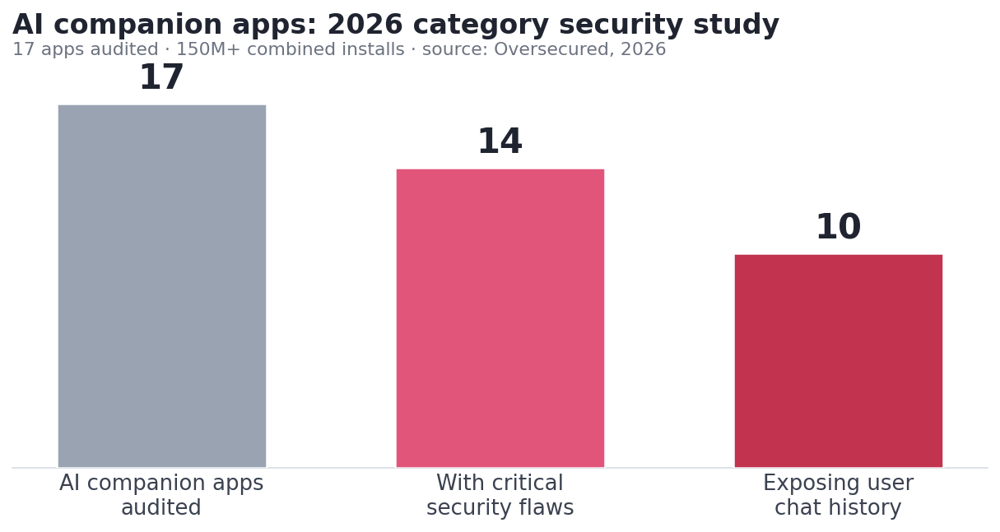

Untitled
Is Pleasur.ai Safe? Privacy & Security, Reviewed (2026)
You're asking because you're about to type private things into an app and you want to know who can read them later. Fair question. The short answer for Pleasur.ai is yes, for an informed adult — it ships the protections people assume are standard but plenty of companion apps skip, it commits in writing not to sell your data, and its public breach record is clean against a documented 2026 category security crisis. The catch, said plainly: no app is risk-free, this one included, and it does collect and retain what you give it.
So the verdict isn't a "100% private" sticker. It's a yes you can verify. Everything about Pleasur.ai below traces to one source you can open yourself: its public privacy policy, set against the 2026 category-risk picture, a safety-dimension comparison, and tight answers to the questions people search most.
The AI companion safety problem in 2026 [GAIN]
The reason "is this app safe?" is worth asking in 2026: most AI companion apps did not pass an independent security check — and that's the bar Pleasur.ai has to clear.
Security firm Oversecured tested the category and found 14 critical security flaws across 17 popular AI companion apps with a combined 150M-plus installs on Google Play. Ten of those apps exposed user conversation history. One app with more than 10 million downloads shipped hardcoded cloud credentials — an OpenAI API token and a Google Cloud private key — sitting in plain sight inside its public app file, where anyone who unpacked it could find them. The findings were also covered by AndroidHeadlines and CyberNews.
The flaw types matter more than the count. "Injectable chat" — a cross-site scripting hole — lets an attacker read your conversation in real time or hijack the session. Insecure file access leaves private data unprotected on the device. Hardcoded tokens publish the keys to a backend inside the app itself. None of these are exotic attacks. They are foundational protections, missed.
A regulatory gap sits underneath all of it, too.
The takeaway isn't to panic. It's that "safe" can't be something an app declares about itself. It comes down to which apps actually ship the protections — and which publish enough for you to check. For the wider view of what data AI girlfriend apps really collect, and how the 2026 breaches unfolded, we cover the category in its own guide. Against that backdrop, here is exactly what Pleasur.ai does with your data — in its own words.

What Pleasur.ai actually does with your data [GAIN]
Pleasur.ai's published privacy policy spells out what it collects, how it protects it, and the one line that matters most. The live policy states, word for word, "We do not sell your personal information." That's a written commitment, not a marketing claim — and where data monetization is a standing worry, it's the strongest single signal on the page.
Now the full scope, because you can't consent to a net you can't see. Pleasur.ai collects a wide range of data, which is normal for the category and worth knowing:
- Account info — email, username, password, gender, display name, and profile details.
- Usage data — your interactions with AI characters, chat messages, generated content, and preferences.
- Device info — IP address, browser, operating system, device identifiers, and screen resolution.
That's a real amount of data, and informed consent only works when you can see what you're agreeing to.
Protection is where Pleasur.ai meets the standard so many apps in the study did not. The policy commits to encryption of data in transit (TLS/SSL) and at rest — both the wire and the server, not just one of the two. Payments run through PCI-DSS-compliant processors, the same standard your bank uses, and the platform works with vetted hosting and payment providers rather than handling everything itself.
Here is the limit you need beside all of that. Data is collected and retained, and deletion is not a clean wipe. Account data is kept while your account is active and for up to 3 years after deletion or your last activity for legal and business reasons. Financial records can be held up to 10 years to satisfy tax law. Marketing data persists until you withdraw consent or go inactive for two years. Standard practice for the category — but worth knowing before you sign up.
The most concrete trust proof is one you can act on yourself: the deletion control. You can request deletion of your personal data at any time, through two real exit paths — in-app via Settings, or by contacting support. That's something you can verify, not a promise you have to take on faith. Pair it with the retention window above, though: requesting deletion starts the process, but some records persist for the periods the law requires.
Knowing what one app does is useful. Knowing how to weigh it against the category is what tells you whether it's the safer choice.
So is Pleasur.ai safe? How it stacks up — and how to judge any app
On the dimensions that decide whether an AI companion is safe, Pleasur.ai handles the protections the 2026 study found so many apps failing. But "safer than the worst of the category" is a floor, not a guarantee.
Here are those dimensions side by side. Every Pleasur.ai cell traces to its published policy; every category cell traces to the Oversecured study.
| Safety dimension | Category risk (2026, sourced) | Pleasur.ai posture (sourced) |
|---|---|---|
| Breach / chat exposure | 10 of 17 studied apps exposed user conversation history (Oversecured 2026) | No data breach affecting Pleasur.ai has been publicly reported as of June 2026 — a dated public-record statement, not a guarantee (see FAQ below) |
| Encryption | Several studied apps shipped insecure data handling or hardcoded credentials (Oversecured 2026) | Encryption in transit (TLS/SSL) and at rest (privacy policy) |
| Selling your data | Data-monetization concerns flagged across the category | "We do not sell your personal information" (privacy policy) |
| Retention & deletion | Often vague or undocumented across the category | Deletion on request via Settings or support; retained up to 3 yrs post-deletion, financial up to 10 yrs — all stated (privacy policy) |
| Age / 18+ gate | Inconsistent across the category | 18+ only: "not intended for anyone under 18 years of age" (privacy policy) |
| Your legal rights | Not always offered | GDPR / UK GDPR / CCPA: access, rectification, erasure, restriction, portability, objection, consent withdrawal (privacy policy) |
Read the table fairly and it says one thing: Pleasur.ai meets the verifiable dimensions and publishes its policy for you to check. That's a transparency point, not a claim it is "the safest" or risk-free. The rights row is a control you own: under GDPR and UK GDPR, and under California's CCPA, you can request a copy of your data, correct it, erase it, restrict its use, port it elsewhere, object to processing, or withdraw consent — by reading the policy and contacting support. Those aren't favors. They're rights you can act on.
The more durable skill is vetting any companion app yourself, so you're never taking a brand's word for it. Run a candidate through our AI companion safety checklist before you sign up — it walks the same dimensions, clause by clause.
Those same dimensions answer the specific questions people ask most.
Frequently asked questions
Does Pleasur.ai store my conversations?
Can anyone read my chats, or does Pleasur.ai train its AI on my conversations?
Has Pleasur.ai had a data breach?
What personal data does Pleasur.ai collect?
Is Pleasur.ai GDPR compliant?
How does Pleasur.ai handle my data if I delete my account?
Is Pleasur.ai safe to use?
The bottom line
"Safe" isn't a yes-or-no badge for an AI companion. It's whether you can read and verify how an app handles the private things you type into it. Against a 2026 category where most apps failed that test, Pleasur.ai ships the protections, commits in writing not to sell your data, keeps a clean public breach record, and publishes the policy for you to check. That's what a careful answer looks like — not a guarantee, but something you can verify before you decide.
- Pleasur.ai handles the verifiable dimensions — encryption in transit and at rest, no data sale, GDPR/CCPA rights, 18+ — that the 2026 category study found many apps missing.
- It has no publicly reported data breach as of June 2026, set against a category where 10 of 17 studied apps exposed user chats.
- "Safe" here means informed consent, not zero risk: data is collected and retained (up to 3 years post-deletion, financial records up to 10 years), so read the policy before you commit.
See how Pleasur.ai handles your data
Read the published policy before you decide. If you want to try it, you can build a companion with the AI Companion Creator. 18+ only.
Read the privacy policyEditor notes / Voice-flagged statements (review)
These are opinionated voice / population framing, intentionally NOT auto-linked (two-tier rule). Editor decides per case: - "most AI companion apps did not pass an independent security check" (intro to the 2026 problem) — population framing; the supporting figures beneath it are sourced. - "the protections people assume are standard but plenty of companion apps skip" (lead) — qualitative voice; backed by the sourced Oversecured comparison. - "Data-monetization concerns flagged across the category" (table cell) — category-level framing, no single citable origin; supported in spirit by the Oversecured study and press coverage. - "Standard practice for the category" (retention paragraph) — voice qualifier, not a numeric claim.